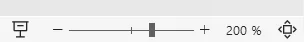
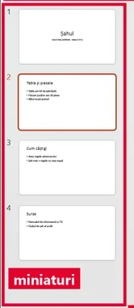

<!doctype html>
<html lang="ro">
<head>
<meta charset="utf-8">
<meta name="viewport" content="width=device-width, initial-scale=1, viewport-fit=cover">
<title>Antrenament: Prezentări</title>
<meta name="description" content="Antrenament pentru clasa a VI-a: întrebări trase la întâmplare despre prezentările digitale, pe trei runde (De bază, Consolidat, Avansat), altele la fiecare reluare.">
<link rel="preconnect" href="https://fonts.googleapis.com">
<link rel="preconnect" href="https://fonts.gstatic.com" crossorigin>
<link rel="stylesheet" href="https://fonts.googleapis.com/css2?family=Epilogue:wght@600;800&family=Karla:ital,wght@0,400;0,600;0,700;1,400&family=Azeret+Mono:wght@500;600&display=swap">
<link rel="stylesheet" href="../_motor/motor.css">
<style>
:root{
  --desk:#EDEFE4; --paper:#FFFFFF; --paper2:#F4F6EC; --line:#D3D9C2;
  --ink:#1C2112; --ink2:#586147; --accent:#4F6A00; --accentInk:#FFFFFF; --sel:#E2EBC4;
  --mark:#E4D7FF; --markInk:#1B1430; --ok:#1D6B45; --okbg:#E1F2E7; --bad:#B3261E; --badbg:#FBE5E1;
  --fd:"Epilogue","Segoe UI",system-ui,sans-serif; --fb:"Karla","Segoe UI",system-ui,sans-serif; --fm:"Azeret Mono",Consolas,monospace;
}
@media (prefers-color-scheme:dark){:root:not([data-theme="light"]){
  --desk:#11130C; --paper:#1A1D14; --paper2:#23271B; --line:#373D2A; --ink:#EEF2E1; --ink2:#AEB79A;
  --accent:#B8D86A; --accentInk:#141A05; --sel:#34401A; --mark:#B9A4F0; --markInk:#1A1330;
  --ok:#79CE9C; --okbg:#16301F; --bad:#FF8C7F; --badbg:#3A1C18;
}}
:root[data-theme="dark"]{
  --desk:#11130C; --paper:#1A1D14; --paper2:#23271B; --line:#373D2A; --ink:#EEF2E1; --ink2:#AEB79A;
  --accent:#B8D86A; --accentInk:#141A05; --sel:#34401A; --mark:#B9A4F0; --markInk:#1A1330;
  --ok:#79CE9C; --okbg:#16301F; --bad:#FF8C7F; --badbg:#3A1C18;
}
/* tema: fâșia de sus = bara de jos a unei expuneri de diapozitive, ca în vizualizarea prezentatorului:
   butoanele ◀ ▶, contorul „3 / 12”, bara de progres pe segmente și punctul indicatorului laser */
.banda{display:flex;align-items:center;gap:10px;min-height:30px;padding:0 14px;font-family:var(--fm);font-size:.68rem;color:var(--ink2);
  background:var(--paper2);border-bottom:2px solid var(--accent);overflow:hidden;white-space:nowrap}
.banda .nv{color:var(--accent);font-weight:600}
.banda .ct{font-weight:600;color:var(--ink)}
.banda .pr{display:flex;gap:3px;flex:1 1 auto;min-width:40px}
.banda .pr i{display:block;height:5px;flex:1 1 0;border-radius:2px;background:var(--line)}
.banda .pr i.on{background:var(--accent)}
.banda .ls{width:9px;height:9px;border-radius:50%;background:#E0261B;box-shadow:0 0 0 3px rgba(224,38,27,.25),0 0 10px 2px rgba(224,38,27,.55);flex:none}
/* Azeret Mono desenează ligatura „fi” ca „fı” (se vedea „fıecare”, „fınal”): ligaturile oprite peste tot */
body{font-variant-ligatures:none}
h1{font-weight:800;letter-spacing:-.02em}
h1 em{font-style:normal;color:var(--accent);box-shadow:inset 0 -.2em 0 var(--mark)}
h2{font-weight:800}
</style>
</head>
<body>
<script src="../_motor/motor.js"></script>
<script>
/* COPIE din jocuri/prezentari-vi (15.09.2026), tipul „diapozitiv”, extinsă cu specificații (câmpul `cere`).
   Întrebare: {t:'diapozitiv', q, titlu, randuri:[...], start:{tx,bg,mt,ms}, verifica:['contrast','marime','randuri'], min?, why,
               cere?:{fundal?:'deschis'|'inchis', textMin?:pt, maxRanduri?:n, maxCuvinte?:n}}
   Verificare pe COMPORTAMENT: contrastul se CALCULEAZĂ din culori (luminanța WCAG, prag 4,5), fundalul deschis/închis tot din
   luminanță, mărimile se compară cu regula (sau cu specificația), cuvintele se numără pe fiecare rând păstrat.
   Nu există răspuns memorat: rezolvarea automată CAUTĂ o combinație care trece aceeași verificare, deci orice combinație
   care respectă regulile și specificația e acceptată. */
const JocDiapozitiv=(function(){
'use strict';
const TXT=[['negru','#1F1F1F'],['alb','#FFFFFF'],['galben','#F2C300'],['roșu','#D62828'],['gri deschis','#BDBDBD']];
const BG=[['alb','#FFFFFF'],['bleumarin','#1E3A5F'],['portocaliu','#F28C28'],['gri','#9E9E9E']];
const MT=[20,28,36], MS=[12,16,26,44];
function lum(hex){const c=[1,3,5].map(i=>parseInt(hex.slice(i,i+2),16)/255).map(v=>v<=0.03928?v/12.92:Math.pow((v+0.055)/1.055,2.4));return 0.2126*c[0]+0.7152*c[1]+0.0722*c[2]}
function contrast(a,b){const x=lum(a),y=lum(b);return (Math.max(x,y)+0.05)/(Math.min(x,y)+0.05)}
const words=s=>s.split(/\s+/).filter(w=>/[0-9A-Za-zĂÂÎȘȚăâîșț]/.test(w)).length;
const deschis=hex=>lum(hex)>0.6, inchis=hex=>lum(hex)<0.1;
const CSS=`.dz-wrap{container-type:inline-size;max-width:520px;margin:0 auto 14px}
.dz-slide{aspect-ratio:16/9;border:1px solid var(--line);border-radius:4px;box-shadow:0 3px 0 var(--line);padding:5cqw 6cqw;overflow:hidden;font-family:Arial,"Segoe UI",sans-serif;line-height:1.2}
.dz-t{font-size:calc(var(--pt) * 100cqw / 640);font-weight:700;margin:0 0 .45em;overflow-wrap:anywhere}
.dz-l{font-size:calc(var(--pt) * 100cqw / 640);margin:0;padding-left:1.1em}
.dz-l li{margin:.12em 0;overflow-wrap:anywhere}
.dz-spec{display:flex;flex-wrap:wrap;gap:6px;margin:0 0 12px}
.dz-spec span{font-family:var(--fm);font-size:.72rem;padding:3px 8px;border:1px dashed var(--accent);border-radius:999px;color:var(--ink);background:var(--paper2)}
.dz-ctl{display:grid;gap:12px}
.dz-opts{display:flex;flex-wrap:wrap;gap:6px}
.dz-sw{display:inline-flex;align-items:center;gap:6px;padding:6px 10px;border:1px solid var(--line);border-radius:6px;background:var(--paper2);font-size:.9rem;line-height:1.2;min-height:38px}
.dz-sw i{width:16px;height:16px;border-radius:3px;border:1px solid var(--ink2);flex:none}
.dz-sw.on{border-color:var(--accent);box-shadow:inset 0 0 0 2px var(--accent);font-weight:600}
.dz-rows{display:flex;flex-direction:column;gap:6px}
.dz-row{display:flex;gap:10px;align-items:flex-start;text-align:left;padding:8px 10px;border:1px solid var(--line);border-radius:6px;background:var(--paper2);line-height:1.3;overflow-wrap:anywhere}
.dz-row b{font-family:var(--fm);font-size:.72rem;width:5.2em;flex:none;padding-top:.2em;color:var(--ok)}
.dz-row span{min-width:0}
.dz-row.off{background:transparent}
.dz-row.off span{text-decoration:line-through;color:var(--ink2)}
.dz-row.off b{color:var(--bad)}`;

const V_=Q=>Q.verifica||['contrast','marime','randuri'];
const cere=Q=>Q.cere||{};
function init(Q){const s=Object.assign({tx:0,bg:0,mt:2,ms:2},Q.start||{});s.keep=Q.randuri.map(()=>true);return s}

function problems(Q,st){
  const V=V_(Q),C=cere(Q),has=k=>V.includes(k),out=[];
  if(has('contrast')){
    const r=contrast(TXT[st.tx][1],BG[st.bg][1]);
    if(C.fundal==='inchis'&&!inchis(BG[st.bg][1]))out.push(`Specificația cere un fundal închis, iar fundalul ${BG[st.bg][0]} nu este închis.`);
    if(C.fundal==='deschis'&&!deschis(BG[st.bg][1]))out.push(`Specificația cere un fundal deschis, iar fundalul ${BG[st.bg][0]} nu este deschis.`);
    if(r<4.5)out.push(`Textul ${TXT[st.tx][0]} pe fundal ${BG[st.bg][0]} se vede slab. Alege text închis pe fundal deschis sau text deschis pe fundal închis.`);
  }
  if(has('marime')){
    const t=MT[st.mt],x=MS[st.ms],tm=C.textMin||24;
    if(t<32)out.push(`Titlul de ${t} e prea mic: un titlu are în jur de 32–40.`);
    if(x<tm)out.push(C.textMin?`Specificația cere textul de cel puțin ${tm}. Acum are ${x}.`:`Textul de ${x} nu se citește din ultima bancă: pune-l în jur de 24–28.`);
    else if(x>=t)out.push(`Textul de ${x} e cel puțin cât titlul. Titlul trebuie să fie cel mai mare, ca să se vadă despre ce e vorba.`);
  }
  if(has('randuri')){
    const maxC=C.maxCuvinte||6,maxR=C.maxRanduri||6,min=Q.min||3;
    const kept=Q.randuri.filter((_,k)=>st.keep[k]),lung=kept.filter(r=>words(r)>maxC);
    if(lung.length)out.push(`${lung.length===1?'Un rând păstrat are':lung.length+' rânduri păstrate au'} mai mult de ${maxC} cuvinte (de exemplu „${lung[0].split(/\s+/).slice(0,3).join(' ')}…”). Pe diapozitiv rămân ideile scurte, restul îl spui tu.`);
    if(kept.length<min)out.push(`${kept.length===0?'Nu a rămas niciun rând.':kept.length===1?'A rămas un singur rând.':`Au rămas ${kept.length} rânduri.`} Păstrează cel puțin ${min} idei scurte, ca diapozitivul să spună ceva.`);
    if(kept.length>maxR)out.push(`Ai păstrat ${kept.length} rânduri. ${C.maxRanduri?'Specificația cere':'Încap bine'} cel mult ${maxR}.`);
  }
  return out;
}
function solution(Q){
  const V=V_(Q),C=cere(Q),b=init(Q),has=k=>V.includes(k);
  const maxC=C.maxCuvinte||6,maxR=C.maxRanduri||6;let n=0;
  const keep=has('randuri')?Q.randuri.map(r=>words(r)<=maxC).map(k=>k&&(++n)<=maxR):b.keep;
  const tl=has('contrast')?TXT.map((_,i)=>i):[b.tx],bl=has('contrast')?BG.map((_,i)=>i):[b.bg];
  const ml=has('marime')?[2,1,0]:[b.mt],sl=has('marime')?[2,3,1,0]:[b.ms];
  for(const tx of tl)for(const bg of bl)for(const mt of ml)for(const ms of sl){
    const s={tx,bg,mt,ms,keep};if(!problems(Q,s).length)return s}
  throw new Error('JocDiapozitiv: specificația nu are nicio soluție');
}
function render(Q,body,api){
  if(!document.getElementById('tip-diapozitiv-css')){const s=document.createElement('style');s.id='tip-diapozitiv-css';s.textContent=CSS;document.head.appendChild(s)}
  const esc=api.esc,V=V_(Q),C=cere(Q),has=k=>V.includes(k),st=init(Q);
  const spec=[];
  if(C.fundal)spec.push(`fundal ${C.fundal==='inchis'?'închis':'deschis'}`);
  if(C.textMin)spec.push(`text de cel puțin ${C.textMin}`);
  if(C.maxRanduri)spec.push(`cel mult ${C.maxRanduri} rânduri`);
  if(C.maxCuvinte)spec.push(`cel mult ${C.maxCuvinte} cuvinte pe rând`);
  const group=(label,html)=>`<div><div class="lbl">${label}</div><div class="dz-opts">${html}</div></div>`;
  function draw(){
    const sw=(arr,key)=>arr.map(([n,c],i)=>`<button type="button" class="dz-sw ${i===st[key]?'on':''}" data-${key}="${i}" aria-pressed="${i===st[key]}"><i style="background:${c}"></i>${esc(n)}</button>`).join('');
    const sz=(arr,key)=>arr.map((v,i)=>`<button type="button" class="dz-sw ${i===st[key]?'on':''}" data-${key}="${i}" aria-pressed="${i===st[key]}">${v}</button>`).join('');
    body.innerHTML=(spec.length?`<div class="lbl">Specificația</div><div class="dz-spec">${spec.map(x=>`<span>${esc(x)}</span>`).join('')}</div>`:'')
      +`<div class="dz-wrap"><div class="dz-slide" role="img" aria-label="Diapozitivul, așa cum arată acum" style="background:${BG[st.bg][1]};color:${TXT[st.tx][1]}">
        <div class="dz-t" style="--pt:${MT[st.mt]}">${esc(Q.titlu)}</div>
        <ul class="dz-l" style="--pt:${MS[st.ms]}">${Q.randuri.map((r,k)=>st.keep[k]?`<li>${esc(r)}</li>`:'').join('')}</ul>
      </div></div>
      <div class="dz-ctl">
        ${has('contrast')?group('Culoarea textului',sw(TXT,'tx'))+group('Fundalul',sw(BG,'bg')):''}
        ${has('marime')?group('Mărimea titlului',sz(MT,'mt'))+group('Mărimea textului',sz(MS,'ms')):''}
        ${has('randuri')?`<div><div class="lbl">Rândurile · apasă ca să păstrezi sau să scoți</div><div class="dz-rows">${Q.randuri.map((r,k)=>`<button type="button" class="dz-row ${st.keep[k]?'on':'off'}" data-k="${k}" aria-pressed="${st.keep[k]}"><b>${st.keep[k]?'păstrez':'scot'}</b><span>${esc(r)}</span></button>`).join('')}</div></div>`:''}
      </div>`;
    body.querySelectorAll('[data-tx]').forEach(b=>b.onclick=()=>{if(api.done())return;st.tx=+b.dataset.tx;draw()});
    body.querySelectorAll('[data-bg]').forEach(b=>b.onclick=()=>{if(api.done())return;st.bg=+b.dataset.bg;draw()});
    body.querySelectorAll('[data-mt]').forEach(b=>b.onclick=()=>{if(api.done())return;st.mt=+b.dataset.mt;draw()});
    body.querySelectorAll('[data-ms]').forEach(b=>b.onclick=()=>{if(api.done())return;st.ms=+b.dataset.ms;draw()});
    body.querySelectorAll('[data-k]').forEach(b=>b.onclick=()=>{if(api.done())return;const k=+b.dataset.k;st.keep[k]=!st.keep[k];draw()});
  }
  draw();
  const nav=api.checkButton(()=>{
    const pr=problems(Q,st);
    if(!pr.length){nav.innerHTML='';api.resolve(true)}
    else{api.resolve(false,esc(pr.slice(0,2).join(' '))+(pr.length>2?` (încă ${pr.length-2})`:''));
      api.revealButton(()=>{const s=solution(Q);
        st.tx=s.tx;st.bg=s.bg;st.mt=s.mt;st.ms=s.ms;st.keep=s.keep.slice();
        draw();nav.innerHTML='';
        const parts=[];
        if(has('contrast'))parts.push(`text ${TXT[st.tx][0]} pe fundal ${BG[st.bg][0]}`);
        if(has('marime'))parts.push(`titlul ${MT[st.mt]}, textul ${MS[st.ms]}`);
        if(has('randuri'))parts.push('doar rândurile care respectă regula');
        api.giveUp(`o variantă bună e acum pe diapozitiv: ${parts.join('; ')}.`)})}
  });
}
function aplica(body,s){
  const click=sel=>{const b=body.querySelector(sel);if(b)b.click()};
  click(`[data-tx="${s.tx}"]`);click(`[data-bg="${s.bg}"]`);click(`[data-mt="${s.mt}"]`);click(`[data-ms="${s.ms}"]`);
  s.keep.forEach((k,i)=>{const b=body.querySelector(`[data-k="${i}"]`);if(b&&(b.getAttribute('aria-pressed')==='true')!==k)b.click()});
}
function rezolva(Q,body){aplica(body,solution(Q))}
/* Greșeala tipică, pornind de la o variantă bună: întâi specificația ignorată (fundalul „cel mai citeț”, dar nu cel cerut),
   apoi textul galben pe alb, titlul de 20 sau toate rândurile păstrate. Se alege prima pe care verificarea chiar o respinge. */
function gresit(Q,body){
  const s=solution(Q),V=V_(Q),C=cere(Q),cand=[];
  const iT=n=>TXT.findIndex(t=>t[0]===n),iB=n=>BG.findIndex(b=>b[0]===n);
  if(V.includes('contrast')){
    if(C.fundal==='inchis')cand.push({...s,tx:iT('negru'),bg:iB('alb')});
    if(C.fundal==='deschis')cand.push({...s,tx:iT('alb'),bg:iB('bleumarin')});
    cand.push({...s,tx:iT('galben'),bg:iB('alb')});
  }
  if(V.includes('marime'))cand.push({...s,mt:MT.indexOf(20)});
  if(V.includes('randuri'))cand.push({...s,keep:Q.randuri.map(()=>true)});
  const g=cand.find(c=>problems(Q,c).length);
  if(!g)throw new Error('JocDiapozitiv: nu am găsit o greșeală tipică pentru această întrebare');
  aplica(body,g);
}
return {render,rezolva,gresit,problems,solution,contrast,words};
})();

/* Acoperirea programei (OMEN 3393/2017, domeniul „Prezentări”), textul EXACT din curriculum.json. */
const PROG={
  interfata:'Elemente de interfață a unei aplicații de realizare a prezentărilor',
  instrumente:'Instrumente de bază ale aplicației de realizare a prezentărilor',
  gestionare:'Operații de gestionare a prezentărilor: creare, deschidere, expunere, salvare în diverse formate, închidere',
  structura:'Structura unei prezentări: diapozitive, obiecte utilizate în prezentări (casete de text, imagini importate, forme, sunete, tabele, legături)',
  editare:'Operații de editare a unei prezentări: inserare, copiere, mutare, ștergere a unui diapozitiv/obiect',
  formatare:'Formatarea textului, obiectelor, diapozitivelor',
  animatie:'Efecte de animație',
  tranzitie:'Efecte de tranziție',
  expunere:'Modalități de expunere a unei prezentări',
  estetica:'Reguli elementare de estetică și ergonomie utilizate în realizarea unei prezentări',
  sustinere:'Reguli elementare de susținere a unei prezentări'
};

/* ---------------- Runda 1: De bază ----------------
   Descriptorul CS.1.1: cu sprijin, elemente simple (casete text, forme predefinite), editare, formatări, expunere,
   pași ghidați, contexte familiare. Aici: recunoaștere, o singură idee pe întrebare, pași scriși. */
const BAZA=[
 {t:'choice',lectii:[2],q:'Lucrezi în PowerPoint la o prezentare cu 12 diapozitive. Vrei să afli repede la al câtelea diapozitiv ești. Unde te uiți, jos, sub zona de lucru?',
  o:['Pe bara de stare','Pe fila Inserare','În caseta titlului','Pe fila Proiectare'],ok:0,
  why:'Bara de stare, jos, arată de obicei numărul diapozitivului la care ești (de exemplu „3 din 12”) și nivelul de mărire. Filele de sus au comenzi, iar caseta titlului e chiar pe diapozitiv.'},
 {t:'classify',lectii:[2],q:'Care aplicații fac prezentări cu diapozitive?',cats:['Face prezentări cu diapozitive','Nu e făcută pentru prezentări'],
  items:[['Microsoft PowerPoint',0],['Calculatorul din Windows',1],['LibreOffice Impress',0],['Paint',1],['Google Slides',0],['Notepad',1]],
  why:'PowerPoint, Impress și Google Slides lucrează toate cu diapozitive, obiecte și efecte, deci operațiile învățate într-una merg și în celelalte. Paint desenează, Notepad scrie text simplu, iar Calculatorul socotește.'},
 {t:'match',lectii:[3],q:'Ce operație de gestionare folosești în fiecare situație?',
  pairs:[['Creare','începi proiectul de biologie de la zero'],['Deschidere','continui azi lucrul salvat ieri'],['Expunere','le arăți colegilor prezentarea pe tot ecranul'],['Închidere','termini lucrul la prezentare']],
  why:'Creezi când nu există încă fișierul, îl deschizi când există deja, îl expui când îl arăți publicului, iar la final îl închizi.'},
 {t:'tf',lectii:[3],q:'Închizi prezentarea la care ai lucrat. Odată cu ea se închide obligatoriu și aplicația de prezentări.',ok:false,
  why:'Fals. Închiderea prezentării scoate de pe ecran doar fișierul acela. Aplicația poate rămâne pornită, gata pentru altă prezentare.'},
 {t:'order',lectii:[3],q:'Vrei o copie PDF a prezentării tale, ca s-o trimiți. Pune pașii în ordine.',
  items:['Deschizi prezentarea terminată','Alegi „Salvare ca…” sau „Export”','Alegi locul, numele și formatul PDF','Deschizi PDF-ul și verifici cum arată'],
  why:'Întâi ai nevoie de prezentare pe ecran. „Salvare ca…” sau „Export” (numele diferă de la o aplicație la alta) te lasă să schimbi formatul, iar verificarea vine la final, pe fișierul nou, ca să vezi că arată cum voiai.'},
 {t:'match',lectii:[4],q:'Pregătești o prezentare despre natură. Ce obiect pui pe diapozitiv pentru fiecare nevoie?',
  pairs:[['Tabel','compari trei animale după greutate și viteză'],['Legătură','duci publicul la site-ul parcului național'],['Sunet','asculți cum cântă privighetoarea'],['Formă (săgeată)','arăți drumul apei pe o schemă'],['Imagine importată','arăți fotografia unui urs']],
  why:'Fiecare obiect are rostul lui: tabelul ordonează date, legătura te duce în alt loc, sunetul se aude, forma desenează o schemă, iar imaginea arată cum e ceva în realitate.'},
 {t:'choice',lectii:[4],q:'Ai de vorbit 5 minute despre animalul tău preferat. Cam câte diapozitive pregătești, dacă ții cont de regula „cam un diapozitiv pe minut”?',
  o:['Între 5 și 7','Unul singur','Între 15 și 20','Cam 30'],ok:0,
  why:'Regula e orientativă: cam un minut de vorbit pe diapozitiv. Cu prea puține diapozitive înghesui totul pe unul, iar cu prea multe treci în fugă și nu mai explici nimic.'},
 {t:'choice',lectii:[5],q:'Ai lucrat mult la aspectul unui diapozitiv. Îți trebuie încă unul la fel, în care schimbi doar textul. Ce faci?',
  o:['Dublezi diapozitivul','Ascunzi diapozitivul','Ștergi și refaci diapozitivul','Adaugi un diapozitiv gol'],ok:0,
  why:'Dublarea face o copie identică, care păstrează tot aspectul, deci schimbi doar textul. Diapozitivul gol te pune să refaci totul, iar ascunderea sau ștergerea nu îți dau un diapozitiv în plus.'},
 {t:'classify',lectii:[5],q:'Copiezi sau muți?',cats:['Copiez (Ctrl + C, apoi Ctrl + V)','Mut (Ctrl + X, apoi Ctrl + V)'],
  items:[['Sigla școlii trebuie pe toate diapozitivele',0],['Diapozitivul cu concluzia a ajuns la mijloc',1],['Aceeași săgeată îți trebuie de trei ori pe schemă',0],['Poza vulcanului stă pe diapozitivul greșit',1],['Tabelul trebuie să ajungă pe diapozitivul următor',1]],
  why:'Copiezi când obiectul rămâne și în locul vechi (sigla, săgeata). Muți când trebuie să dispară de unde era și să apară în altă parte (concluzia, poza, tabelul).'},
 {t:'choice',lectii:[6],q:'Ce mărime alegi pentru rândurile unei liste, ca să le citească și colegii din ultima bancă?',
  o:['24','12','14','8'],ok:0,
  why:'Pe ecranul din clasă, literele de 12 sau 14 se văd prea mici de departe. Textul unei liste are în jur de 24, iar titlul e și mai mare.'},
 {t:'tf',lectii:[6],q:'O listă cu idei se citește mai ușor aliniată la stânga decât centrată.',ok:true,
  why:'Adevărat. La alinierea la stânga, fiecare rând începe în același loc, deci ochiul găsește ușor rândul următor. Centrat arată bine doar un titlu scurt.'},
 {t:'choice',lectii:[7],q:'În PowerPoint, pe ce filă alegi efectul cu care apare diapozitivul următor, la trecerea de la unul la altul?',
  o:['Tranziții','Animații','Proiectare','Inserare'],ok:0,
  why:'Trecerea de la un diapozitiv la altul este o tranziție și are fila ei. Fila Animații mișcă obiectele de pe același diapozitiv, Proiectare schimbă tema, iar Inserare adaugă obiecte.'},
 {t:'tf',lectii:[7],q:'Același obiect poate primi mai multe animații. De exemplu, o imagine intră pe diapozitiv, apoi, mai târziu, iese.',ok:true,
  why:'Adevărat. Un obiect poate avea mai multe efecte, iar fiecare primește un număr care arată ordinea în care se redă.'},
 {t:'tf',lectii:[8],q:'În timpul expunerii, în PowerPoint, săgeata spre stânga te duce înapoi la diapozitivul anterior.',ok:true,
  why:'Adevărat. Săgeata spre dreapta te duce mai departe, iar săgeata spre stânga înapoi. Dacă diapozitivul are animații, întâi te întoarce la animația dinainte. Așa te poți întoarce când un coleg vrea să mai vadă o dată ceva.'},
 {t:'choice',lectii:[8],q:'Ești în expunere, la diapozitivul 3, și vrei să sari direct la diapozitivul 9. Ce faci în PowerPoint?',
  o:['Tastezi 9, apoi apeși Enter','Apeși Esc, apoi tastezi 9','Apeși Ctrl + 9, apoi Enter','Apeși Home, apoi tastezi 9'],ok:0,
  why:'În expunere, numărul diapozitivului urmat de Enter te duce direct acolo. Esc oprește expunerea, Home te duce la primul diapozitiv, iar Ctrl + 9 nu e printre scurtăturile expunerii. Numărul are nevoie de Enter ca să te ducă acolo.'},
 {t:'choice',lectii:[8],q:'Prezinți cum circulă apa în natură. Ce imagine pui pe diapozitiv?',
  o:['O schemă care arată drumul apei','O poză drăguță cu o pisică','Un fundal plin de sclipici','Un desen care se mișcă tot timpul'],ok:0,
  why:'O imagine bună explică ideea. Pisica e doar decor, sclipiciul acoperă textul, iar mișcarea continuă obosește ochii și ia atenția de pe ce spui.'}
];

/* ---------------- Runda 2: Consolidat ----------------
   Descriptorul: independent, mai multe elemente de structură și conținut, formatări de bază, expunere, contexte familiare.
   Aici: situații cu două-trei elemente; alegi singur operația, fără pașii scriși. */
const CONSOLIDAT=[
 {t:'hunt',lectii:[2],q:'Rareș descrie fereastra aplicației de prezentări. Găsește cele 3 greșeli.<figure class="captura"><a href="../prezentari-vi/img/fereastra.webp" target="_blank"></a><figcaption>Fereastra aplicației de prezentări, ca să ai la ce te uita.</figcaption></figure>',
  src:'Sus, pe [[bara de stare|Sus stă panglica, cu filele de comenzi. Bara de stare e jos.]], găsesc filele cu comenzi. În stânga e panoul cu miniaturi, de unde schimb ordinea diapozitivelor. În mijloc e zona de lucru, cu diapozitivul mare. Dedesubt e zona de note, [[pe care o vede și publicul|Notele sunt doar pentru tine. Publicul vede numai diapozitivele.]]. Jos de tot, bara de stare arată [[fontul textului selectat|Bara de stare arată numărul diapozitivului, limba și mărirea. Fontul îl vezi pe fila Pornire.]].',
  indiciu:'Gândește-te unde e fiecare parte a ferestrei și cine vede notele.',
  why:'Fiecare parte are locul și rostul ei: panglica sus, miniaturile în stânga, zona de lucru în mijloc, notele dedesubt (doar pentru tine) și bara de stare jos.'},
 {t:'choice',lectii:[2],q:'Radu a mărit diapozitivul la 200%, din bara de stare, ca literele să se vadă mari pe videoproiector. Ce îi spui?<figure class="captura"><a href="../prezentari-antrenament-vi/img/marire-bara-stare.webp" target="_blank"></a><figcaption>Glisorul de <b>mărire (zoom)</b> din bara de stare.</figcaption></figure>',
  o:['Mărirea e doar pentru lucru. Pentru sală, mărește fontul','Bine. În expunere, literele vor fi de două ori mai mari','Bine, dar trebuie să salveze, ca să rămână mărirea','Mărirea se vede doar pe videoproiector, nu la el'],ok:0,
  why:'Mărirea (zoom) schimbă doar cât de mare vezi diapozitivul cât lucrezi la el. În expunere, diapozitivul umple oricum tot ecranul, deci literele rămân cât le-ai ales. Pentru cei din ultima bancă mărești chiar textul.'},
 {t:'choice',lectii:[3],q:'În PowerPoint, vrei ca prezentarea să pornească direct pe tot ecranul când colegul dă dublu clic pe fișier, pe calculatorul lui cu PowerPoint. Ce format alegi la „Salvare ca…”?',
  o:['.ppsx','.pdf','.pptx','.png'],ok:0,
  why:'Fișierul .ppsx se deschide direct în modul prezentare. Un .pptx se deschide pentru editare, un .pdf e făcut pentru citit și tipărit, iar .png e o simplă imagine.'},
 {t:'classify',lectii:[3],q:'În ce format salvezi, după ce urmează să se întâmple cu prezentarea?',cats:['.pptx sau .odp (se mai lucrează la ea)','.pdf (doar se citește sau se tipărește)'],
  items:[['Colega ta mai adaugă mâine două diapozitive',0],['Diriginta o tipărește pentru avizier',1],['Continui acasă proiectul început la școală',0],['O pui pe site-ul școlii, ca să arate la fel pe orice telefon',1],['Vrei să păstrezi animațiile pentru ora de mâine',0]],
  why:'.pptx și .odp se pot modifica și păstrează tot ce ai lucrat, inclusiv animațiile. PDF-ul arată la fel oriunde și e bun de citit sau de tipărit, dar nu se mai lucrează ușor în el și nu e făcut pentru expunerea cu efecte.'},
 {t:'choice',lectii:[3],q:'Ai folosit în prezentare un font descărcat de pe internet. Pe calculatorul din clasă, textul arată cu totul altfel și iese din casete. Care e cauza cea mai probabilă?',
  o:['Calculatorul din clasă nu are fontul tău','Fișierul s-a stricat pe drum','Videoproiectorul schimbă singur fonturile','Ai salvat prezentarea prea des'],ok:0,
  why:'Dacă fontul lipsește pe alt calculator, aplicația îl înlocuiește cu altul, cu altă lățime a literelor. Te ferești folosind fonturi obișnuite sau, în PowerPoint, bifând „Încorporare fonturi în fișier” (Fișier, Opțiuni, Salvare).'},
 {t:'classify',lectii:[4],q:'Pe ce diapozitiv pui fiecare lucru?',cats:['Primul (titlul)','La mijloc (conținutul)','Ultimul (concluzia și sursele)'],
  items:[['Subiectul prezentării și numele tău',0],['O idee, cu imaginea care o explică',1],['Adresele site-urilor de unde ai luat pozele',2],['Ce trebuie să rețină colegii',2],['Un tabel cu datele despre o singură idee',1]],
  why:'Primul diapozitiv spune despre ce e vorba și cine prezintă. La mijloc vine câte o idee pe diapozitiv. La final rămân concluzia și sursele.'},
 {t:'choice',lectii:[4],q:'Pe diapozitivul cu cuprinsul, vrei ca un clic pe cuvântul „Vulcani” să te ducă direct la diapozitivul 5. Ce pui pe cuvânt?',
  o:['O legătură','O tranziție','O animație','Un sunet'],ok:0,
  why:'O legătură te poate duce la o pagină web sau la alt diapozitiv din aceeași prezentare. Tranziția schimbă doar felul în care apare diapozitivul următor, animația mișcă un obiect, iar sunetul se aude.'},
 {t:'choice',lectii:[5],q:'Diapozitivele 4, 5, 6 și 7 nu mai trebuie. Cum le alegi pe toate patru deodată în panoul cu miniaturi, ca să le ștergi?<figure class="captura"><a href="../prezentari-antrenament-vi/img/miniaturi.webp" target="_blank"></a><figcaption><b>Panoul cu miniaturi</b>, din stânga ferestrei.</figcaption></figure>',
  o:['Clic pe 4, apoi Shift + clic pe 7','Clic pe 4, apoi Ctrl + clic pe 7','Clic pe 4, apoi Ctrl + A','Clic pe 7, apoi Shift + clic pe 8'],ok:0,
  why:'Shift + clic alege tot șirul, de la primul clic până la al doilea. Ctrl + clic adaugă doar diapozitivul pe care dai clic (5 și 6 ar rămâne), Ctrl + A le alege pe toate, iar 7–8 nu e șirul cerut.'},
 {t:'choice',lectii:[5],q:'Trei fotografii de pe diapozitiv stau la înălțimi puțin diferite și arată neîngrijit. Ce folosești?',
  o:['Comenzile de aliniere a obiectelor','Le tragi din ochi până par drepte','Ștergi două dintre ele','Mărești fontul titlului'],ok:0,
  why:'Alinierea le așază exact pe aceeași linie. Din ochi rămân aproape mereu mici diferențe, iar ștergerea sau fontul titlului nu rezolvă așezarea pozelor.'},
 {t:'choice',lectii:[6],q:'Prezentarea va fi arătată într-o sală cu multă lumină, cu jaluzelele ridicate. Ce combinație alegi?',
  o:['Text închis pe fundal deschis','Text deschis pe fundal închis','Text gri pe fundal gri deschis','Text galben pe fundal alb'],ok:0,
  why:'În lumină puternică, fundalurile închise se spală pe ecran, iar textul deschis de pe ele aproape dispare. Textul închis pe fundal deschis rămâne clar. Griul pe gri și galbenul pe alb nu au contrast.'},
 {t:'classify',lectii:[6,7],q:'Schimbarea se face pe un singur diapozitiv sau pe toate deodată?',cats:['Doar pe diapozitivul ales','Pe toate diapozitivele'],
  items:[['Schimbi fundalul diapozitivului cu care începe un capitol nou',0],['Aplici o temă din galeria de teme',1],['Colorezi o săgeată de pe schemă',0],['Apeși „Se aplică pentru toate” după ce ai ales tranziția',1],['Mărești titlul de pe diapozitivul 4',0]],
  why:'Fundalul unui diapozitiv, culoarea unei forme și titlul se schimbă acolo unde lucrezi. Tema și butonul „Se aplică pentru toate” sunt făcute ca să schimbe toată prezentarea dintr-o mișcare.'},
 {t:'choice',lectii:[7],q:'Vrei ca al doilea punct al listei să apară singur, imediat după primul, fără încă un clic. Ce pornire alegi pentru animația lui? (în PowerPoint, numele pot diferi puțin după versiune)',
  o:['După precedentul','La clic','Cu anteriorul','O durată mai lungă'],ok:0,
  why:'„După precedentul” pornește efectul imediat după cel dinainte. „La clic” așteaptă clicul tău, „Cu anteriorul” le pornește deodată, iar durata spune doar cât ține efectul.'},
 {t:'hunt',lectii:[7],q:'Maria își descrie efectele din prezentarea despre vulcani. Găsește cele 3 greșeli.',
  src:'Pe diapozitivul cu vulcanul, lava urcă pe munte cu [[o tranziție|Mișcarea unui obiect pe același diapozitiv e o animație, nu o tranziție.]]. Între diapozitive pun aceeași tranziție scurtă. Titlul fiecărui diapozitiv [[se rotește de trei ori|Textul care se rotește devine greu de citit. Titlul trebuie să stea pe loc.]]. Punctele listei apar pe rând, la clic. La fiecare literă a titlului [[se aude un sunet|Sunetele repetate obosesc publicul și acoperă ce spui.]].',
  indiciu:'Verifică dacă e numit bine fiecare efect și dacă efectele ajută sau încurcă.',
  why:'Un efect are un motiv și nu obosește publicul. Tranziția e între diapozitive, animația e pe același diapozitiv, iar textul trebuie să rămână ușor de citit.'},
 {t:'choice',lectii:[8],q:'La finalul prezentării, un coleg te întreabă ceva la care nu știi răspunsul. Ce faci?',
  o:['Spui sincer că nu știi și că vei căuta','Inventezi repede un răspuns sigur pe tine','Te prefaci că n-ai auzit întrebarea','Îi spui că întrebarea lui nu e bună'],ok:0,
  why:'Publicul are încredere în cine spune sincer ce știe și ce nu. Un răspuns inventat poate învăța greșit toată clasa, iar ignorarea întrebării arată lipsă de respect.'},
 {t:'match',lectii:[8],q:'La repetiție, colegii îți semnalează câte o problemă. Ce reparație potrivești fiecăreia?',
  pairs:[['„Nu citim din ultima bancă”','mărești literele'],['„Poza de fundal acoperă textul”','pui o culoare simplă sau o imagine ștearsă'],['„Diapozitivul are zece rânduri”','păstrezi ideile, restul îl spui'],['„Efectele ne amețesc”','lași puține efecte, scurte']],
  why:'Fiecare reparație pleacă de la cine privește: literele mari se văd de departe, fundalul liniștit lasă textul să iasă în față, ideile scurte se înțeleg dintr-o privire, iar efectele puține nu obosesc ochii.'}
];

/* ---------------- Runda 3: Avansat (finală) ----------------
   Descriptorul: independent, elemente diverse, formatări și efecte predefinite, expunere, respectând reguli date de
   structură și design, estetică și ergonomie, organizând prezentarea în funcție de cerința dată, în contexte noi.
   Aici: planuri pentru un public dat, diapozitive reparate după o specificație (3 sarcini „fac eu”), situații neprevăzute. */
const AVANSAT=[
 {t:'choice',lectii:[9],q:'La ședința cu părinții ai 3 minute să arăți, pe ecranul din sala mare, ce ați făcut în excursie. Care plan se potrivește?',
  o:['Titlul, 3 diapozitive cu câte o poză mare și câteva cuvinte, apoi mulțumirile','20 de diapozitive cu toate pozele, fiecare cu altă tranziție','Un singur diapozitiv cu tot jurnalul excursiei, scris cu 14','5 diapozitive, fiecare cu un paragraf pe care îl citești de pe ecran'],ok:0,
  why:'În 3 minute încap puține diapozitive. Pozele mari și cuvintele puține se văd din sala mare. 20 de diapozitive nu încap în timp, textul de 14 nu se vede, iar paragrafele citite plictisesc.'},
 {t:'diapozitiv',lectii:[8],q:'Diapozitivul e pentru elevii de clasa I, care abia au învățat să citească. Alege culori cu contrast puternic și păstrează doar rândurile care respectă specificația.',
  titlu:'Animalele pădurii',
  randuri:['Ursul doarme iarna','Vulpea are coada lungă și roșcată, ca focul','Ariciul are țepi','Veverița adună alune pentru iarnă','Lupul trăiește în haită'],
  start:{tx:2,bg:0,mt:2,ms:2},verifica:['contrast','randuri'],min:2,cere:{maxRanduri:3,maxCuvinte:4},
  why:'Jocul a calculat contrastul culorilor tale și a numărat cuvintele de pe fiecare rând păstrat. Pentru cine abia citește, rândurile sunt și mai scurte decât de obicei.'},
 {t:'diapozitiv',lectii:[6],q:'Clubul de astronomie are o temă cu fundal închis, ca cerul nopții. Specificația cere fundal închis și text de cel puțin 26. Repară diapozitivul.',
  titlu:'Planetele',randuri:['Mercur e cea mai mică','Jupiter e cea mai mare','Saturn are inele'],
  start:{tx:0,bg:0,mt:0,ms:1},verifica:['contrast','marime'],cere:{fundal:'inchis',textMin:26},
  why:'Jocul a verificat din culori că fundalul e închis și că textul are contrast cu el, apoi a comparat mărimile cu specificația: textul de cel puțin 26, titlul mai mare decât textul.'},
 {t:'diapozitiv',lectii:[8],q:'Anunțul rulează pe ecranul din holul luminos al școlii și e citit din mers, de departe. Specificația: fundal deschis, text de cel puțin 26, cel mult 4 rânduri de cel mult 5 cuvinte. Repară diapozitivul.',
  titlu:'Târgul de carte',
  randuri:['Joi, 11 martie, ora 12','În sala de sport','Aduceți și cărțile citite pe care vreți să le schimbați','Cărți la 5 lei','Banii strânși merg la biblioteca școlii, pentru cărți noi','Te așteptăm!'],
  start:{tx:4,bg:0,mt:1,ms:3},verifica:['contrast','marime','randuri'],min:3,cere:{fundal:'deschis',textMin:26,maxRanduri:4,maxCuvinte:5},
  why:'Jocul a verificat pe rând tot ce cere specificația: fundalul deschis și contrastul, mărimile, numărul de rânduri și cuvintele de pe fiecare rând. Informațiile importante (când, unde, cât costă) încap în rânduri scurte.'},
 {t:'hunt',lectii:[9],q:'Specificația: 4 minute pentru clasa a IV-a, despre reciclare; 4–6 diapozitive, cel mult 4 rânduri pe diapozitiv, text de cel puțin 24, sursele la final. Planul lui Vlad are 4 abateri. Găsește-le.',
  src:'Diapozitivul 1: „Reciclarea”, numele meu și clasa. Diapozitivele de la 2 la [[11|Cu primul și ultimul ajung la 12 diapozitive. Specificația cere 4–6.]]: câte un fel de deșeu. Pe diapozitivul despre plastic am [[7 rânduri|Specificația cere cel mult 4 rânduri. Restul îl spui tu.]]. Ca să încapă tot, [[scriu textul cu 16|Specificația cere text de cel puțin 24. Cu mai puține rânduri rămâne loc pentru litere mari.]]. Pe fiecare diapozitiv pun o imagine care explică. Ultimul diapozitiv: concluzia și „Mulțumesc!”, [[fără nimic altceva|Lipsesc sursele, cerute la final.]].',
  indiciu:'Ia specificația punct cu punct și caută în plan fiecare punct.',
  why:'O specificație se bifează punct cu punct. Planul lui Vlad avea un început bun, dar prea multe diapozitive pentru 4 minute, prea mult text, litere prea mici și niciun rând cu sursele.'},
 {t:'choice',lectii:[7],q:'Explici pe un singur diapozitiv cum crește o plantă: sămânța, rădăcina, tulpina, floarea. Desenul trebuie să se construiască în ordinea creșterii, pe măsură ce vorbești. Ce alegi?',
  o:['Intrare la clic pe fiecare desen, în ordine','O singură tranziție, pusă între diapozitive','Intrare pe toate desenele, pornite deodată','Ieșire la clic pe sămânță, chiar la început'],ok:0,
  why:'Animația de intrare la clic aduce fiecare parte când ajungi cu vorba la ea, iar ordinea urmează creșterea plantei. Tranziția schimbă diapozitivul, efectele pornite deodată arată totul dintr-odată, iar ieșirea ar scoate sămânța.'},
 {t:'choice',lectii:[8],q:'Ai de prezentat 3 minute, dar videoproiectorul din sală nu pornește. Ce faci?',
  o:['Vorbești după note și arăți câteva planșe tipărite','Renunți, fiindcă fără ecran nu se poate prezenta','Citești cu voce tare tot textul diapozitivelor','Trimiți fișierul colegilor și nu mai vorbești'],ok:0,
  why:'Prezentarea stă în structură și în ce spui, nu doar în fișier. Planul și notele te țin pe drum, iar câteva planșe înlocuiesc ecranul. Textul citit sau fișierul trimis nu mai sunt o prezentare.'},
 {t:'classify',lectii:[8],q:'Prezinți la clubul bunicilor, într-o sală mare. Mulți văd mai greu de departe. Ce alegere li se potrivește?',cats:['Se potrivește','Nu se potrivește'],
  items:[['Text de 28 sau mai mare',0],['Font subțire, cu înflorituri',1],['Text negru pe fundal alb',0],['Diapozitive care trec singure după 3 secunde',1],['O idee pe diapozitiv, cu o imagine mare',0],['Titluri care se rotesc când apar',1]],
  why:'Pentru cine vede mai greu contează literele mari și simple, contrastul puternic și timpul de citit. Fontul subțire, diapozitivele grăbite și textul care se rotește îi pierd pe cei din spatele sălii.'},
 {t:'match',lectii:[5],q:'Doi colegi și-au lipit diapozitivele în aceeași prezentare, iar ea arată pestriță. Ce reparație potrivești fiecărei probleme?',
  pairs:[['Jumătate din diapozitive au alte culori și fonturi','aplici aceeași temă pe toată prezentarea'],['Cuprinsul arată doar ideile unui coleg','refaci cuprinsul pentru toată prezentarea'],['Două diapozitive spun același lucru','păstrezi unul și îl ștergi pe celălalt'],['Sursele stau pe două diapozitive diferite','le aduni pe ultimul diapozitiv']],
  why:'O prezentare făcută în echipă trebuie să pară făcută de un singur om: aceleași culori și fonturi, un cuprins pentru tot, fără repetări și cu sursele la un loc, la final.'},
 {t:'choice',lectii:[5],q:'Pe diapozitiv ai o hartă și trei etichete, așezate exact unde trebuie. Acum toată schema trebuie mutată mai jos, fără să se strice așezarea. Ce faci?',
  o:['Grupezi obiectele, apoi muți grupul','Muți pe rând fiecare obiect, din ochi','Ștergi schema și o faci din nou, mai jos','Mărești harta până acoperă etichetele'],ok:0,
  why:'Grupate, harta și etichetele se mută ca un singur obiect, deci rămân una față de alta exact cum le-ai așezat. Mutate pe rând, se strică aproape sigur așezarea.'},
 {t:'choice',lectii:[6],q:'Un coleg nu deosebește roșul de verde. Pe diapozitivul tău, răspunsurile corecte sunt scrise cu verde, iar cele greșite cu roșu. Ce schimbi ca să înțeleagă și el?',
  o:['Adaugi și semne: ✔ și ✘','Faci verdele puțin mai deschis','Scrii totul doar cu roșu','Pui un fundal verde deschis'],ok:0,
  why:'Informația nu trebuie dusă numai de culoare. Semnele ✔ și ✘ se înțeleg și fără să vezi culorile, iar o nuanță mai deschisă de verde tot nu se deosebește de roșu.'},
 {t:'choice',lectii:[7],q:'Specificația pentru standul clasei, la ziua școlii: prezentarea rulează singură, fiecare diapozitiv stă 8 secunde și are aceeași tranziție. Ce setezi în PowerPoint, pe fila Tranziții?',
  o:['Tranziția, „După” 8 secunde, apoi „Se aplică pentru toate”','Tranziția, „La clic de mouse”, apoi „Se aplică pentru toate”','Tranziția și „După” 8 secunde, doar pe primul diapozitiv','O animație de intrare de 8 secunde pe fiecare titlu'],ok:0,
  why:'„După” face diapozitivul să treacă singur după timpul ales, iar „Se aplică pentru toate” pune aceeași tranziție și același timp pe toate diapozitivele. „La clic de mouse” așteaptă un om lângă calculator, setarea făcută doar pe primul diapozitiv nu ajunge la celelalte, iar animația mișcă un obiect, nu schimbă diapozitivul.'},
 {t:'choice',lectii:[9],q:'Cu cinci minute înainte de oră afli că ai doar 2 minute, nu 10. Prezentarea ta are 10 diapozitive. Ce faci?',
  o:['Păstrezi titlul, ideea principală și concluzia','Vorbești de cinci ori mai repede decât ai exersat','Pui diapozitivele să treacă singure, la 12 secunde','Ștergi titlul și concluzia, păstrezi detaliile'],ok:0,
  why:'Când timpul se scurtează, păstrezi ce răspunde la întrebarea principală: despre ce e, ideea de bază și ce trebuie reținut. Celelalte diapozitive le poți ascunde: rămân în fișier pentru altă dată. Vorbitul în grabă și diapozitivele care fug nu mai lasă nimic în mintea publicului.'}
];

JocMotor.porneste({
  mod:'antrenament',
  cheie:'joc_prezentari_antrenament_vi',
  titlu:'Antrenament: Prezentări',
  marca:'Antrenament: <b>Prezentări</b>',
  h1:'Antrenament: <em>Prezentări</em>',
  clasa:'a VI-a',
  unitate:'VI-U1',
  unitateTitlu:'Prezentări digitale',
  competente:['CS.1.1','CS.3.1'],
  lectii:'2–9',
  intro:'Antrenament pe toată unitatea despre prezentări, în trei runde: De bază, Consolidat și Avansat. Nu ai pagini de citit. Primești câteva întrebări trase la întâmplare dintr-un bazin mai mare. Reia o rundă de câte ori vrei: de fiecare dată vin alte întrebări, pe aceleași lucruri din lecții. În runda finală repari singur diapozitive după o specificație.',
  banda:'<span class="nv">◀</span><span class="ct">3 / 12</span><span class="nv">▶</span><span class="pr"><i class="on"></i><i class="on"></i><i class="on"></i><i></i><i></i><i></i><i></i><i></i><i></i><i></i><i></i><i></i></span><span class="ls" aria-hidden="true"></span>',
  nivele:[
    {t:'De bază',descriptor:'De bază',cate:6,bazin:BAZA,lectii:[2,3,4,5,6,7,8],
     continuturi:[PROG.interfata,PROG.instrumente,PROG.gestionare,PROG.structura,PROG.editare,PROG.formatare,PROG.animatie,PROG.tranzitie,PROG.expunere,PROG.estetica],
     text:'<p>Fereastra are <strong>panglica</strong> sus, <strong>miniaturile</strong> în stânga, <strong>notele</strong> sub diapozitiv și <strong>bara de stare</strong> jos. Pe diapozitiv așezi <mark>obiecte</mark>. <mark>Tranziția</mark> e între diapozitive, <mark>animația</mark> mișcă un obiect.</p>'},
    {t:'Consolidat',descriptor:'Consolidat',cate:6,bazin:CONSOLIDAT,lectii:[2,3,4,5,6,7,8],
     continuturi:[PROG.interfata,PROG.instrumente,PROG.gestionare,PROG.structura,PROG.editare,PROG.formatare,PROG.animatie,PROG.tranzitie,PROG.expunere,PROG.estetica,PROG.sustinere],
     text:'<p>Alegi formatul după ce urmează: <code>.pptx</code> dacă se mai lucrează, <code>.pdf</code> dacă doar se citește. Mai multe obiecte le aliniezi cu comenzile de aliniere, iar un șir de diapozitive îl alegi cu <kbd>Shift</kbd> + clic. Un efect are un motiv.</p>'},
    {t:'Avansat',descriptor:'Avansat',final:true,cate:5,bazin:AVANSAT,lectii:[5,6,7,8,9],
     continuturi:[PROG.structura,PROG.editare,PROG.formatare,PROG.animatie,PROG.tranzitie,PROG.expunere,PROG.estetica,PROG.sustinere],
     text:'<p>Întâi te întrebi <mark>cine privește</mark> și <mark>cât timp ai</mark>. O specificație o bifezi punct cu punct. Pe ecran rămâne ideea, explicația o spui tu.</p>'}
  ],
  tipuri:{diapozitiv:JocDiapozitiv},
  diploma:{
    titlu:'Prezentator antrenat',
    rezumat:'trei runde de antrenament pe prezentări digitale: fereastra aplicației și fișierul, obiectele și editarea, formatarea, animațiile și tranzițiile, expunerea și prezentarea pentru un public dat',
    aplicatie:'aplicația de prezentări de la clasă (PowerPoint, Impress sau Google Slides)',
    provocare:[
      'Specificația ta: o prezentare de 3 minute pentru clasa a III-a despre anotimpul tău preferat, cu 4–5 diapozitive.',
      'Primul diapozitiv are titlul și numele tău, ultimul are concluzia și sursele. Pe fiecare diapozitiv: cel mult 4 rânduri scurte și o imagine care explică.',
      'Alege o temă, verifică contrastul și mărimea textului (în jur de 24–28), apoi pune o singură tranziție pe toate diapozitivele.',
      'Pe diapozitivul cu cele mai multe idei, fă punctele să apară pe rând, la clic. Scrie în zona de note ce spui și verifică totul pornind expunerea.',
      'Salvează ca <code>Nume_Prenume_anotimp</code> (<code>.pptx</code> sau <code>.odp</code>) și repetă o dată, cu cronometrul. Fără calculator: desenează pe hârtie cele 4–5 diapozitive, cu notele pe spate.'
    ]
  }
});
</script>
</body>
</html>
